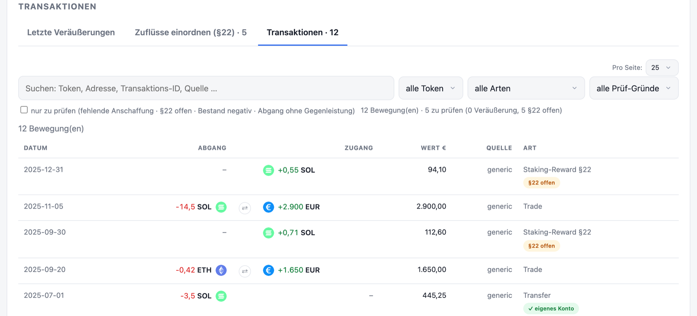

Zu viele Quellen
Ein halbes Dutzend Wallets, mehrere Börsen, Ledger, CSV-Exporte. Alles landet in unterschiedlichen Formaten. Von Hand zusammenzuführen ist praktisch unmöglich.
Nachprüfbar statt Blackbox: deutsche Steuer-Reports (§23/§22/§20) aus über 60 Quellen – 34 Blockchains, Börsen per Read-only-API und CSV, inklusive der komplizierten DeFi-Fälle. Ohne Cloud, ohne Konto, ohne dass deine Daten je deinen Rechner verlassen.

Viele Wallets, Solana-DeFi, Futures, Airdrops. Und die großen Cloud-Tools verlangen, dass du dein komplettes Vermögen auf fremde Server hochlädst, um es überhaupt berechnen zu lassen.
Ein halbes Dutzend Wallets, mehrere Börsen, Ledger, CSV-Exporte. Alles landet in unterschiedlichen Formaten. Von Hand zusammenzuführen ist praktisch unmöglich.
Swaps, Airdrops, wertlose Spam-Token, Anschaffungskosten über Wallet-Grenzen hinweg. Genau hier rechnen die meisten Tools falsch, oft um ein Vielfaches.
Cloud-Tools funktionieren nur, wenn du deine kompletten Wallet- und Handelsdaten hochlädst. Ein vollständiges Profil deines Vermögens, auf Servern, die du nicht kontrollierst. Was dabei übertragen wird.
Andere sagen „vertrau uns". Wir zeigen dir, was das Tool tut und was nicht. Und du kannst es selbst kontrollieren.
Wir bitten dich nicht, uns zu glauben. Wir sagen dir, wie du es nachmisst – mit Werkzeugen, die nichts mit uns zu tun haben.
Du lädst alles hoch.
Deine kompletten Wallet- und Handelsdaten liegen auf fremden Servern. Was dort passiert, ist eine Blackbox – du musst es glauben.
Alles bleibt auf deinem Rechner.
Die App holt nur ab, was sie zum Rechnen braucht, direkt von der Quelle. Jeder Datenfluss ist nachprüfbar.
Kein Kleingedrucktes: Die App führt jeden Host, den sie kontaktiert, namentlich auf – nach Börsen, Chains und Kursen getrennt. Die Liste wächst mit jeder neuen Quelle mit, und sie steht dort, bevor du sie suchen musst.

Ehrlich und konkret: keine Feature-Liste zum Angeben, sondern die Dinge, die eine korrekte deutsche Krypto-Steuer wirklich braucht.
34 Blockchains (Solana inkl. nativem Staking, alle großen EVM-Ketten, Bitcoin & Co., Cardano, Polkadot, XRP, Hedera, Sui, Tron), 16 Börsen per Read-only-API und 13 Datei-Importe — bei Börsen mit beiden Wegen ist der empfohlene markiert. Alle Quellen im Überblick.
Bewertet Swaps über den real geflossenen Gegenwert – nicht über fehleranfällige Feed-Preise. Zieht Anschaffungskosten über Wallet-Grenzen und behandelt wertlose Spam-Token korrekt.
Hinterlegte Coins bleiben gebunden statt verkauft: Aave-Einlagen, Liquid Staking und wSOL lösen keine Veräußerung aus – und stehen für FIFO nicht mehr zur Verfügung, solange sie hinterlegt sind.
Jede Einkunftsart landet dort, wo sie hingehört: mit tagesgenauer Haltefrist, Freigrenzen und BMF-konformer Zuordnung. Die Fristen und Freigrenzen im Detail.
FIFO, wallet-bezogen (BMF-konform), Haltefrist tagesgenau, Freigrenze.
Staking & Airdrops, 256 € Freigrenze pro Jahr.
Futures/Perps → Anlage KAP, sauber herausgehalten.
Gleicht importierte Bewegungen gegen dein echtes On-Chain-Guthaben ab (Reconciliation). Der Beleg fürs Finanzamt, dass nichts fehlt.
Das Amt darf die Dateien anfordern, auf denen dein Report beruht (BMF-Schreiben 06.03.2025, Rz. 101). Ein Klick lädt sie alle: Transaktionsübersicht, Einkünfte §22, Termingeschäfte §20, Transfers, Bestände und die Methodik-Datei. Was das Amt konkret verlangt.
Angesetzt wird der Kurs im Zeitpunkt der Anschaffung bzw. des Tauschs (BMF Rz. 43/58). Den bequemeren Tageskurs der Rz. 91 nehmen wir bewusst nicht in Anspruch – er ist nur eine Nichtbeanstandung, kein gleichwertiger Weg. Was der Unterschied ausmacht.
API-Keys liegen im OS-Schlüsselbund (Keychain / Windows Credential Manager): verschlüsselt, nur read-only, nie im Klartext neben deinen Daten.
Termingeschäfte werden sauber von §23 getrennt und mit Jahres-Summen in Euro für die Anlage KAP ausgewiesen – je Buchung zum historischen Kurs. Kein Vermischen der Einkunftsarten.
Fehlt zu einem Verkauf die Anschaffung, ist ein Bestand negativ oder ein Zufluss noch nicht eingeordnet, landet er auf der Prüfliste – filterbar, mit Betragsschwelle. Zu jedem Import legt die App außerdem eine Diagnose an: Zählungen je Endpunkt, ohne API-Schlüssel.
Der Report ist kein Endergebnis, das du glauben musst. Im Transaktions-Tab steht jede Bewegung mit beiden Seiten, Menge, Wert und Haltedauer – durchsuchbar nach Token, Adresse, Transaktions-ID oder Quelle. Was noch zu prüfen ist, markiert die App selbst, statt es unter der Summe verschwinden zu lassen.

Getrennte Datenräume, abgabefertige Reports und ein Vollständigkeitsnachweis, den du dem Finanzamt hinlegen kannst.
Getrennte Datenräume pro Mandant. Keine Vermischung, kein Durcheinander. Jeder Fall bleibt für sich.
Anlage SO (§23) + §22 (mit Freigrenze) + Anlage KAP (§20) + Einzelaufstellung + Vollständigkeitsnachweis. Druckbar als PDF – und die Belege dazu als ein ZIP, wenn das Amt sie anfordert.
Jeder Wert im Report ist nachvollziehbar bis zur On-Chain-Transaktion. Annahmen werden offen gekennzeichnet.

Dass wir das offen sagen, ist selbst ein Vertrauenssignal. Wir versprechen nichts, was wir nicht halten.
Mit echten Testern und im laufenden Ausbau – oft mehrere Versionen pro Woche. Neue Börsen und Korrekturen entstehen meist aus einem konkreten Tester-Fall: jemand schickt seinen Export, wir bauen den Importer daran und prüfen ihn gegen echte Zahlen. Das läuft offen in der Telegram-Gruppe ab.
Wir liefern Berechnung und Belege. Die finale steuerliche Einordnung trifft dein Berater. Dafür haben wir alles sauber vorbereitet.
Wo Annahmen oder Schätzungen nötig sind, werden sie im Report offen gekennzeichnet, nicht versteckt. Du weißt immer, worauf ein Wert beruht.
Es gibt (noch) kein Konto und keinen Warenkorb. Schreib uns einfach kurz, welche Börsen und Chains du nutzt und ob Mac, Windows oder Linux – wir melden uns mit dem Download. Wenn du erst mitlesen willst: In der Telegram-Gruppe stehen die Release-Notes, und dort landen auch die Fragen der anderen Tester.
Lieber telefonisch? 0151 64500145